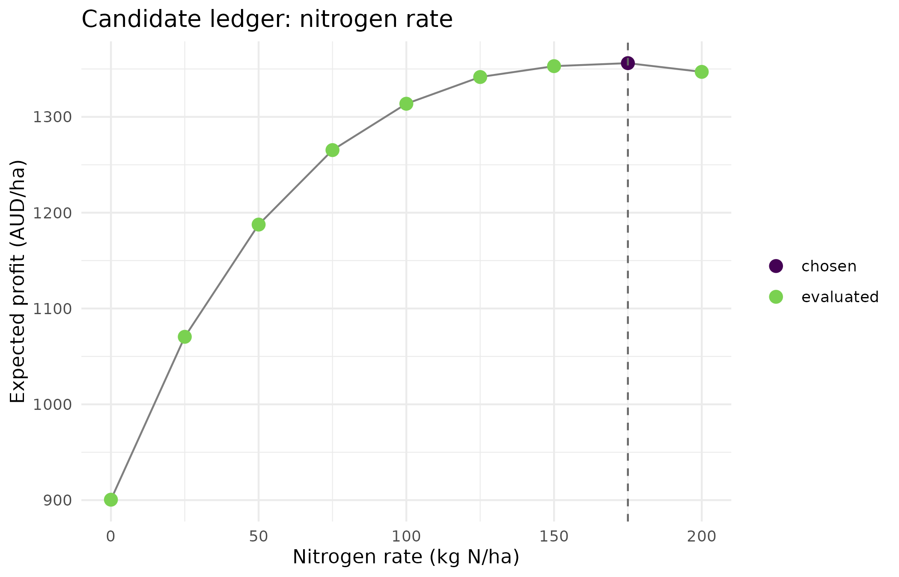
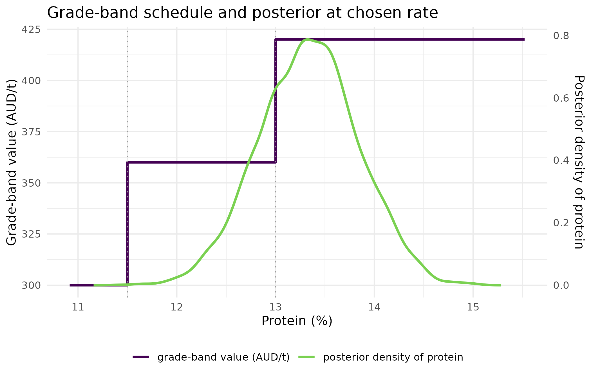

Why
An agronomist closing out a nitrogen trial holds posterior draws of
grain yield at a handful of candidate rates and one concrete question to
answer for the grower: what rate should go on, and how much should I
trust that number? decideR answers both halves of that
question with one call: it turns a posterior into the profit-maximising
rate over the candidates on offer, and it declines to recommend a rate
at all when the yield evidence behind the posterior has not been checked
against its source. This vignette walks that nitrogen decision from
posterior draws to a marked-up candidate curve, shows the refusal for
real on the identical draws, and then carries the same engine into two
further settings – a trading position sized under a capital-preservation
constraint, and a grain-quality payoff that steps rather than rises
smoothly – because the underlying question, act under uncertainty or
decline to, is the same question in every one of them.
What
decide() is the shared keystone every decision in this
vignette reduces to. Given posterior draws of a latent
state, a utility(action, theta) function, and a set of
candidate actions, it evaluates the expected utility of each feasible
candidate by averaging over the draws and returns a
decision: an S7 object carrying the chosen
action, the expected_utility that justified
it, the full candidates ledger, and two fields the
Independent Oracle Principle requires on every decision –
grounding and the abstention record
(abstained, abstain_reason). A decision
abstains, in priority order, when the combined grounding is
not grounded, when no candidate is feasible, when the effective sample
size falls below an opt-in min_ess floor, or when the
leading candidate does not clearly beat the safe action; a fifth trigger
catches a utility that returns no usable value anywhere on the grid.
grounding_grounded() and
grounding_unverified() are the two tokens a fact can carry,
and combine_grounding() folds several into one worst case,
so a decision resting on several inputs is only as grounded as its
weakest one. The full vocabulary of abstention reasons, in the order
decide() checks them:
| Reason | Meaning |
|---|---|
| input_ungrounded | An input fact carries grounding_unverified() (the IOP firewall). |
| no_feasible_action | No candidate satisfies the feasibility constraint. |
| low_ess | The effective sample size is below min_ess (opt-in; off by default). |
| insufficient_evidence | The best action does not clearly beat the safe action. |
| degenerate_utility | Every feasible candidate’s expected utility is NA or NaN. |
decide_input_rate() and
decide_position_size() are the two reference decisions this
vignette exercises directly: the first chooses an agronomic input rate
by expected profit over a matrix of per-rate yield draws, the second
sizes a trading position by capped expected log-growth (the Kelly
objective) under a hard one-period loss-quantile constraint. Both route
through decide()’s shared core, so a nitrogen rate and a
trading position are, structurally, the same computation with a
different utility and a different candidate grid.
decide_from_manifest() and its agronomic convenience
decide_rate_from_manifest() are the manifest-native
pipeline tail: given an orchestra_manifest (or any S7
object exposing the same
outputs/metadata/summary
properties) emitted upstream, they read the predictive draws and the
producer’s own grounding token straight off it, so a decision at the end
of a pipeline never re-derives provenance an upstream member already
established. grade_band_value() builds a step value
schedule for a quality-graded payoff – a grain price that jumps at a
threshold rather than rising continuously – and
grade_band_utility() turns that schedule into a
decide() utility directly (not exercised below, where the
equivalent shift is written by hand to keep the worked example
self-contained).
Do
A nitrogen-rate decision
An upstream model – a mechanistic-simulator inversion, say – has produced posterior draws of grain yield at each of a set of candidate nitrogen rates, following a diminishing-returns response with posterior noise. The engine chooses the rate that maximises expected profit, , at a grain price and an input price .
rates <- seq(0, 200, by = 25)
ymax <- rnorm(2000L, mean = 5.5, sd = 0.3) # posterior of asymptotic yield
yield_draws <- vapply(
rates,
function(r) 3 + (ymax - 3) * (1 - exp(-r / 80)) + rnorm(2000L, 0, 0.1),
numeric(2000L)
)
d_crop <- decide_input_rate(
yield_draws, rates, price_grain = 300, price_input = 1.2,
grounding = grounding_grounded()
)
d_crop
#> <decision> decided [grounded]
#> action : rate=175
#> E[utility]: 1356
#> candidates: 9 evaluated (method: expected_profit)The full candidate ledger – every rate evaluated, feasible or not, with its expected profit – is available for inspection or a methods appendix rather than discarded once the maximiser has run.
| Rate (kg N/ha) | Expected profit (AUD/ha) | Feasible |
|---|---|---|
| 0 | 900 | TRUE |
| 25 | 1070 | TRUE |
| 50 | 1188 | TRUE |
| 75 | 1265 | TRUE |
| 100 | 1314 | TRUE |
| 125 | 1342 | TRUE |
| 150 | 1353 | TRUE |
| 175 | 1356 | TRUE |
| 200 | 1347 | TRUE |
ledger_df <- d_crop@candidates
ledger_df$point_type <- ifelse(
ledger_df$action == d_crop@action, "chosen", "evaluated"
)
ggplot2::ggplot(ledger_df, ggplot2::aes(x = action, y = expected_utility)) +
ggplot2::geom_line(colour = "grey50") +
ggplot2::geom_point(ggplot2::aes(colour = point_type), size = 3) +
ggplot2::geom_vline(
xintercept = d_crop@action, linetype = "dashed", colour = "grey40"
) +
ggplot2::scale_colour_viridis_d(name = NULL, end = 0.8) +
ggplot2::labs(
x = "Nitrogen rate (kg N/ha)", y = "Expected profit (AUD/ha)",
title = "Candidate ledger: nitrogen rate"
) +
ggplot2::theme_minimal()
Expected profit against candidate nitrogen rate. The curve rises steeply at low rates, where nitrogen is well below the point of diminishing yield response, then flattens as the input cost catches up with the marginal yield gain; the chosen rate (marked) sits at the turning point, not at the top of the grid.
The grounding firewall, applied to a nitrogen rate
The identical posterior, prices and candidate grid, but this time the
yield evidence carries grounding_unverified() – not checked
against an external authority, the Independent Oracle Principle
default.
d_crop_ungrounded <- decide_input_rate(
yield_draws, rates, price_grain = 300, price_input = 1.2,
grounding = grounding_unverified()
)
d_crop_ungrounded
#> <decision> ABSTAINED (input_ungrounded) [ungrounded]
#> action : rate=0 (status quo) [ungrounded]
#> candidates: 9 evaluated (method: expected_profit)The same engine, a different domain: sizing a trading position
decide_position_size() routes through the identical
core: given predictive draws of the next-period return, it chooses the
fraction of capital that maximises expected log-growth
over a grid capped at kelly_cap, subject to a hard
one-period loss-quantile constraint.
returns <- rnorm(5000L, mean = 0.02, sd = 0.03) # a small positive edge
d_trade <- decide_position_size(
returns, capital = 1000, max_drawdown = 0.15,
grounding = grounding_grounded()
)
d_trade
#> <decision> decided [grounded]
#> action : size=50.0% (=500)
#> E[utility]: 0.01023
#> candidates: 41 evaluated (method: kelly_log_growth_drawdown_capped)
d_trade@metadata$position # implied dollar position
#> [1] 500With no edge, the grid maximiser is naturally flat – the engine does not manufacture a position where none is warranted.
flat <- decide_position_size(
rnorm(5000L, mean = 0, sd = 0.03), capital = 1000, max_drawdown = 0.15,
grounding = grounding_grounded()
)
flat@action # 0: flat
#> [1] 0And the capital firewall: the same return draws that produced a
decided position above, now carrying grounding_unverified()
– a price feed not checked against the exchange – force flat, regardless
of how attractive the numbers look.
d_trade_ungrounded <- decide_position_size(
returns, capital = 1000, max_drawdown = 0.15,
grounding = grounding_unverified()
)
d_trade_ungrounded@abstained
#> [1] TRUE
d_trade_ungrounded@abstain_reason
#> [1] "input_ungrounded"The pipeline tail: deciding from an upstream manifest
In an ORCHESTRA pipeline the yield posterior above is not assembled
by hand – it arrives as an orchestra_manifest emitted by an
upstream member (a PESTO ensemble inversion, a kernR causal test, a
flexyBayes posterior). decide_rate_from_manifest() reads
the predictive draws and the producer’s grounding token straight off the
manifest and closes the loop into a decision. decideR does
not depend on the contract package – the manifest is read through its
public properties (outputs, metadata,
summary), so the tail consumes any conforming producer
rather than special-casing each one. In production the manifest is a
real orchestra_manifest S7 object from the composition
layer; a minimal S7 stand-in carrying the same public properties is
built below to keep this vignette self-contained.
vignette_manifest <- S7::new_class(
"vignette_manifest",
properties = list(
outputs = S7::new_property(S7::class_any, default = NULL),
metadata = S7::new_property(S7::class_list, default = list()),
summary = S7::new_property(S7::class_any, default = NULL),
run_id = S7::new_property(S7::class_character, default = ""),
emitter_package = S7::new_property(S7::class_character, default = "")
)
)
m_grounded <- vignette_manifest(
outputs = yield_draws,
metadata = list(grounding = grounding_grounded()),
run_id = "pesto-001", emitter_package = "PESTO"
)
m_ungrounded <- vignette_manifest(
outputs = yield_draws,
metadata = list(grounding = grounding_unverified()),
run_id = "pesto-002", emitter_package = "PESTO"
)
d_tail <- decide_rate_from_manifest(
m_grounded, rates = rates, price_grain = 300, price_input = 1.2
)
d_tail
#> <decision> decided [grounded]
#> action : 175
#> E[utility]: 1356
#> candidates: 9 evaluated (method: expected_profit)
d_tail@inputs$emitter_package # provenance carried from the manifest
#> [1] "PESTO"The grounding rides from the producer through the decision: a
manifest whose payload carries grounding_unverified()
forces the status quo, the same firewall applied at the pipeline
boundary rather than inside a single call.
d_tail_ungrounded <- decide_rate_from_manifest(
m_ungrounded, rates = rates, price_grain = 300, price_input = 1.2
)
d_tail_ungrounded@abstained
#> [1] TRUEFor a fully general tail – any candidate set, any utility –
decide_from_manifest() is the function
decide_rate_from_manifest() wraps.
A threshold-economics loss: grade-band payoffs
Many grain payoffs are not smooth in the quality they reward. A
delivery is paid by grade: the price steps up as protein clears a
milling threshold and again at a premium threshold. The value of an
outcome depends on which band it falls in, not on its exact magnitude,
so the decision is governed by the posterior probability of clearing
each band, not by the posterior mean. grade_band_value()
makes that step payoff a first-class, reusable loss: a value schedule
with breakpoints.
protein_value <- grade_band_value(
breaks = c(11.5, 13.0), # milling and premium protein thresholds
values = c(300, 360, 420) # AUD/t: feed, milling, premium
)
protein_value
#> <grade_band_value> 3 bands
#> band value
#> [-Inf, 11.5) 300
#> [11.5, 13) 360
#> [13, Inf) 420Nitrogen lifts grain protein with diminishing returns; the per-hectare value folds in a 5.5 t/ha yield, and nitrogen costs 1.3 per unit rate. A posterior over the base (zero-nitrogen) protein feeds the rate of greatest expected per-hectare value.
qshift <- function(rate, base_protein) {
base_protein + 3.0 * (1 - exp(-rate / 50)) # protein response to nitrogen
}
yield <- 5.5
grain_value <- function(rate, base_protein) {
yield * protein_value(qshift(rate, base_protein)) - 1.3 * rate
}
base_protein <- rnorm(4000L, mean = 10.6, sd = 0.5)
rates_n <- seq(0, 150, by = 15)
d_protein <- decide(
base_protein, grain_value, candidates = rates_n,
grounding = grounding_grounded(), safe_action = 0
)
d_protein
#> <decision> decided [grounded]
#> action : 120
#> E[utility]: 2069
#> candidates: 11 evaluated (method: expected_utility)
prot_best <- qshift(d_protein@action, base_protein)
p_milling <- mean(prot_best >= 11.5)
p_premium <- mean(prot_best >= 13.0)
c(`P(>=11.5 milling)` = p_milling, `P(>=13 premium)` = p_premium)
#> P(>=11.5 milling) P(>=13 premium)
#> 0.99975 0.74400| Rate (kg N/ha) | Expected value (AUD/ha) | Feasible |
|---|---|---|
| 0 | 1662 | TRUE |
| 15 | 1767 | TRUE |
| 30 | 1888 | TRUE |
| 45 | 1946 | TRUE |
| 60 | 1989 | TRUE |
| 75 | 2032 | TRUE |
| 90 | 2059 | TRUE |
| 105 | 2068 | TRUE |
| 120 | 2069 | TRUE |
| 135 | 2065 | TRUE |
| 150 | 2055 | TRUE |
breaks <- attr(protein_value, "breaks")
values <- attr(protein_value, "values")
band_x <- c(min(prot_best) - 0.5, breaks, max(prot_best) + 0.5)
dens <- density(prot_best)
scale_k <- diff(range(values)) / max(dens$y)
plot_df <- rbind(
data.frame(
x = band_x, y = c(values, values[length(values)]),
series = "grade-band value (AUD/t)", stringsAsFactors = FALSE
),
data.frame(
x = dens$x, y = dens$y * scale_k + min(values),
series = "posterior density of protein", stringsAsFactors = FALSE
)
)
ggplot2::ggplot(plot_df, ggplot2::aes(x = x, y = y, colour = series)) +
ggplot2::geom_step(
data = plot_df[plot_df$series == "grade-band value (AUD/t)", ],
direction = "hv", linewidth = 1
) +
ggplot2::geom_line(
data = plot_df[plot_df$series == "posterior density of protein", ],
linewidth = 1
) +
ggplot2::geom_vline(
xintercept = breaks, linetype = "dotted", colour = "grey60"
) +
ggplot2::scale_colour_viridis_d(name = NULL, end = 0.8) +
ggplot2::scale_y_continuous(
name = "Grade-band value (AUD/t)",
sec.axis = ggplot2::sec_axis(
~ (. - min(values)) / scale_k, name = "Posterior density of protein"
)
) +
ggplot2::labs(
x = "Protein (%)",
title = "Grade-band schedule and posterior at chosen rate"
) +
ggplot2::theme_minimal() +
ggplot2::theme(legend.position = "bottom")
The grade-band step schedule (blue, left axis) against protein, with the posterior density of protein at the chosen nitrogen rate overlaid (orange, right axis). Most of the posterior mass sits at or past the milling step and well into the premium band, which is why the engine pays for the nitrogen: it is buying probability of clearing a step, not moving the mean protein a little.
Read
The nitrogen-rate decision settles on 175 kg N/ha, at an expected profit of 1356 AUD/ha – an interior point of the nine-rate grid, short of the 200 kg N/ha ceiling, because beyond it the marginal yield response no longer covers the input cost. The figure makes the same point visually: the chosen rate sits at the turning point of the expected-profit curve, not at an extreme of it, and every rejected candidate stays visible in the ledger above it rather than being discarded once the maximiser has run.
The firewall changes nothing about the posterior or the prices, only
the grounding token, and that alone is enough to move the
decision: d_crop_ungrounded abstains
(abstained is TRUE) with reason
input_ungrounded, returns to the status-quo rate of 0 kg
N/ha, and its action label is suffixed ungrounded so the
caveat travels with the number wherever it is printed. No profit figure
is quoted for a rate the evidence does not support.
The trading decision picks a 50% position ($500 of the $1000 capital
base) on a small positive edge – exactly the kelly_cap
ceiling of 50%, so the binding constraint here is the fractional-Kelly
cap rather than the drawdown guard. With no edge the same engine settles
on 0: a zero-edge return series gives the maximiser nothing to buy.
Grounding the identical return draws as ungrounded
reproduces the nitrogen firewall in the trading domain:
d_trade_ungrounded abstains (TRUE) for the same reason,
input_ungrounded, forcing flat regardless of how attractive
the draws look.
The manifest tail reproduces the hand-assembled nitrogen decision
exactly – d_tail@action is 175, matching
d_crop@action – because
decide_rate_from_manifest() reads the identical draws and
the identical grounding token, only through the manifest’s public
properties rather than by hand. Its inputs$emitter_package
records PESTO, the provenance carried across the pipeline
boundary. Swapping the manifest’s grounding to ungrounded
abstains the tail (TRUE) exactly as the hand-assembled call did: the
firewall is enforced at the boundary of the pipeline, not only inside a
single function call.
The grade-band decision applies 120 kg N/ha of the 150 kg N/ha grid –
enough to be certain of clearing the milling threshold
(P(>=11.5 milling) is 100%) and to clear the premium
threshold on 74% of the posterior, but not so much that the nitrogen
cost outruns the extra premium. The figure shows why: most of the
posterior density of protein at the chosen rate sits at or past the
milling step and well into the premium band, so the engine is buying
probability of clearing a step rather than nudging the mean protein a
fraction of a percentage point.
Limits
Every posterior in this vignette is synthetic – a diminishing-returns
nitrogen response, a Gaussian return series, a shifted protein response
– chosen to keep the vignette fast and self-contained, not fitted to a
field trial or a live price feed; a real PESTO inversion or kernR causal
test would supply the actual posterior these examples stand in for. The
grounding token is set directly by the caller in every example here, by
hand, with grounding_grounded() or
grounding_unverified(); decideR performs no
verification step of its own. Establishing that a fact has actually been
checked against the external authority that owns it is the job of the
upstream producer, and decideR’s contribution is solely to
combine that provenance worst-case and abstain when the combined label
is not grounded. The trading position’s max_drawdown guard
is a hard one-period loss-quantile constraint, not a multi-period
peak-to-trough drawdown; a decision made period by period under this
guard is not equivalent to a backtested trading strategy over a path.
The low_ess trigger is opt-in and is not exercised anywhere
in this vignette, since no call here supplies min_ess;
decisive_prob is left at its default of 0.6 throughout, and
a different threshold would move exactly which near-tie candidates
abstain as insufficient_evidence, a sensitivity not
explored here. The value-of-information verbs
(decide_evpi(), decide_evsi()) and the
benefit-cost verbs (decide_bcr(), bcr_crrdc())
added since this vignette was first written are not demonstrated here;
see What to read next. Every decision above is a single static
candidate scan, not a sequential or dynamic decision problem.
What to read next
From an inference result to a grain plan,
grainPlan’s vignette, is the grain-specific decision
orchestrator built directly on decideR’s manifest tail – it
carries the pipeline demonstrated above through to a practitioner-facing
recommendation. The package’s own reference pages for
decide_evpi(), decide_evsi(),
decide_bcr() and bcr_crrdc() cover the
value-of-information and CRRDC-guideline benefit-cost verbs this
vignette does not exercise; NEWS.md records the audit
findings each of them closed.
Reproduce
Seed 1 for every random draw in this vignette, set once
before the first chunk runs. Package versions follow.
sessionInfo()
#> R version 4.6.1 (2026-06-24)
#> Platform: x86_64-pc-linux-gnu
#> Running under: Ubuntu 24.04.5 LTS
#>
#> Matrix products: default
#> BLAS: /usr/lib/x86_64-linux-gnu/openblas-pthread/libblas.so.3
#> LAPACK: /usr/lib/x86_64-linux-gnu/openblas-pthread/libopenblasp-r0.3.26.so; LAPACK version 3.12.0
#>
#> locale:
#> [1] LC_CTYPE=C.UTF-8 LC_NUMERIC=C LC_TIME=C.UTF-8
#> [4] LC_COLLATE=C.UTF-8 LC_MONETARY=C.UTF-8 LC_MESSAGES=C.UTF-8
#> [7] LC_PAPER=C.UTF-8 LC_NAME=C LC_ADDRESS=C
#> [10] LC_TELEPHONE=C LC_MEASUREMENT=C.UTF-8 LC_IDENTIFICATION=C
#>
#> time zone: UTC
#> tzcode source: system (glibc)
#>
#> attached base packages:
#> [1] stats graphics grDevices utils datasets methods base
#>
#> other attached packages:
#> [1] decideR_0.3.1.9000
#>
#> loaded via a namespace (and not attached):
#> [1] vctrs_0.7.3 cli_3.6.6 knitr_1.52 rlang_1.3.0
#> [5] xfun_0.62 otel_0.2.0 textshaping_1.0.5 S7_0.2.2
#> [9] jsonlite_2.0.0 labeling_0.4.3 glue_1.8.1 htmltools_0.5.9
#> [13] ragg_1.5.2 sass_0.4.10 scales_1.4.0 rmarkdown_2.32
#> [17] grid_4.6.1 evaluate_1.0.5 jquerylib_0.1.4 fastmap_1.2.0
#> [21] yaml_2.3.12 lifecycle_1.0.5 compiler_4.6.1 fs_2.1.0
#> [25] RColorBrewer_1.1-3 systemfonts_1.3.2 farver_2.1.2 digest_0.6.39
#> [29] viridisLite_0.4.3 R6_2.6.1 bslib_0.12.0 withr_3.0.3
#> [33] tools_4.6.1 gtable_0.3.6 pkgdown_2.2.1 ggplot2_4.0.3
#> [37] cachem_1.1.0 desc_1.4.3